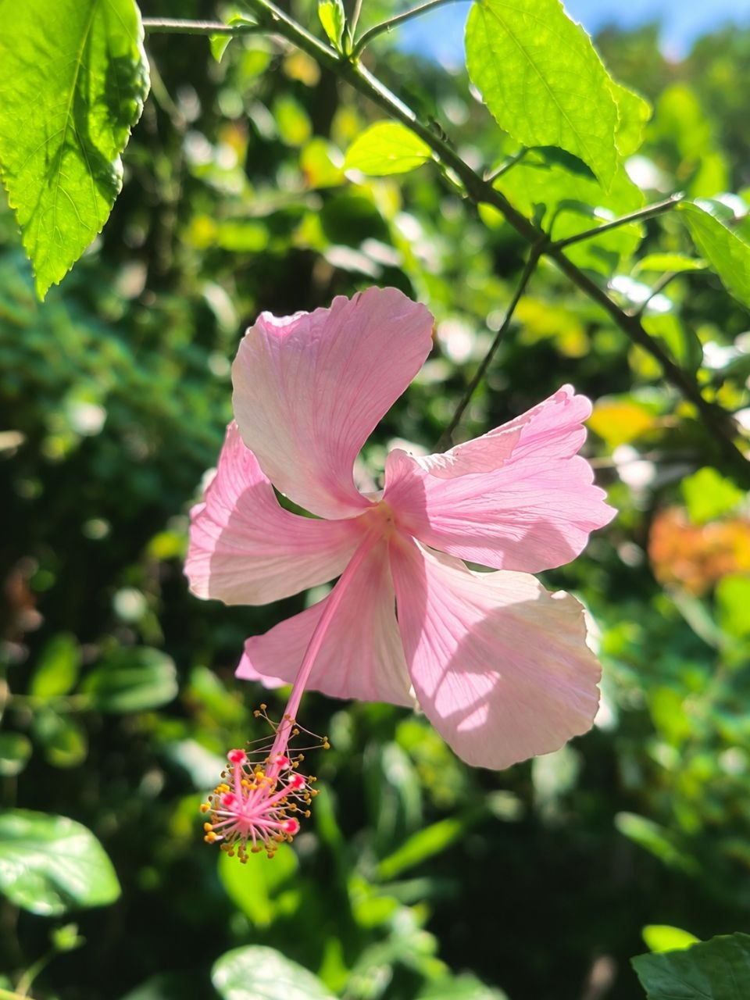

PROJECT 01 · GRAPHICS
✳
Four Shades of Living
An interactive OpenGL application depicting city, village, coastal, and wilderness environments with day-and-night lighting.
Computer science · AI · thoughtful technology
I’m Sadia Islam, a Computer Science undergraduate exploring artificial intelligence, computer vision, and connected systems—with a focus on ideas that can make a difference in the real world.
A little about me
A curious mind, a growing body of work, and a belief that good technology should serve people.
I’m pursuing a B.Sc. in Computer Science & Engineering at American International University-Bangladesh. My interests span AI, machine learning, computer vision, IoT, and frontend development.
Projects
Selected software and engineering projects, from graphics to systems and applications.
An interactive OpenGL application depicting city, village, coastal, and wilderness environments with day-and-night lighting.
Led requirements analysis, system design, and documentation for a solar-powered smart farm management platform.
Built projects including a pharmacy inventory and sales application and a Java-based hotel room and reservation system.
A C++ computer graphics project featuring real-time 3D rendering of planets and spacecraft, dynamic camera movement, shaders, and interactive exploration controls.
An Introduction to Data Science course project analyzing road traffic accident severity and associated factors through data cleaning, exploratory analysis, and statistical visualization.
A PHP and MySQL online bookstore project featuring book discovery, cart management, checkout, and administrative workflows.
Research desk
My current interests are centred on trustworthy AI, visual intelligence, and secure connected systems.
Investigating multimodal machine-learning and deep-learning techniques for detecting manipulated media and misinformation.
Exploring an IoT-based system combining tracking, authentication, environmental sensing, and risk assessment.
Applying explainable AI to model contributing factors and support transparent, interpretable decision-making.
Ongoing experimental research on smartphone-image-based identification of Hilsa (Tenualosa ilisha) and visually similar fish species under uncontrolled real-world conditions.
Peer-reviewed publication · 2025
American Journal of Science, Engineering and Technology · Co-authored research
Core Skills
Programming, web development, engineering, design, and everyday productivity tools.
Certifications & achievements
Professional learning, research contributions, and participation in the AI community.
PC Hardware and Software · Cisco Networking Academy
Course completed · 29 August 2023View Cisco certificate ↗Co-author of “A Low-cost Smart Shoe Solution for Real-Time Obstacle Detection and Location Monitoring in Deafblind Users,” published in the American Journal of Science, Engineering and Technology.
View publication certificate ↗Participated in the seminar “Trust, Transparency, and Optimization: Rethinking AI Systems for Real-World Adoption.”
View participation certificate ↗Participated in the NeuroFlight Lab seminar on AI awareness, opportunities, risks, and responsibility.
View participation certificate ↗Certificate of participation in the Decrypto Fiesta event, organized by Tarunno.
View certificate ↗Listed for the Dean's Award. Certificate has not yet been received.
Certificate pending — not presented as awardedBEYOND THE SCREEN
Photography is my creative space outside research and coding — a way to notice details, light, and everyday moments.
I enjoy photography as a way of exploring perspectives and capturing the beauty in ordinary scenes.
See more on Instagram ↗
LET'S CONNECT
Research collaboration, an exciting project, or just a hello — I'd love to hear from you.
OPEN TO NEW IDEAS
Interested in AI, software, computer vision, or accessible technology? Drop me a message and let's explore what's possible.